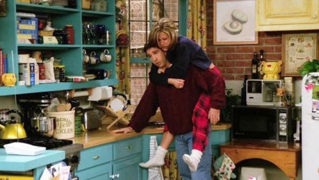

A segunda temporada começa com Rachel descobrindo que Ross está
namorando Julie, alguém que ele conheceu em sua pós-graduação
e reencontrou em uma viagem a China.
Rachel tenta dizer a Ross que ela também gosta dele, depois
de suas tentativas falhas na primeira temporada, embora os
personagens finalmente comecem um relacionamento.
Joey
consegue um papel numa versão fictícia da novela Days
of Our Lives, mas seu personagem é morto após ele alegar
que escreve muitas das suas próprias falas. Monica começa
a namorar Richard, recentemente divorciado e 21 anos mais
velho que ela. No final da temporada, terminam o seu
relacionamento, quando eles percebem que ao contrário de
Monica, Richard não quer ter filhos.
Melhores episódios:
- "Aquele em que Heckles Morre" (02x03)
- "Aquele com o Bebê no Ônibus" (02x06)
- "Aquele em que Ross Descobre" (02x07)
- "Aquele com o Russ" (02x10)
- "Aquele com o Vídeo de Formatura" (02x14)
